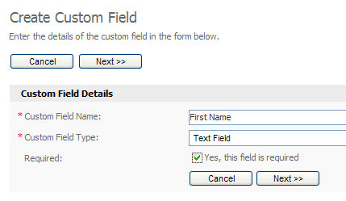
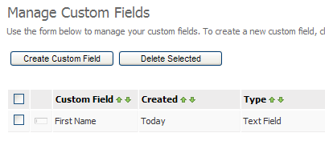
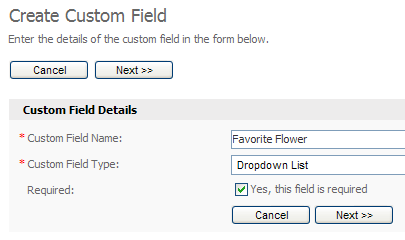
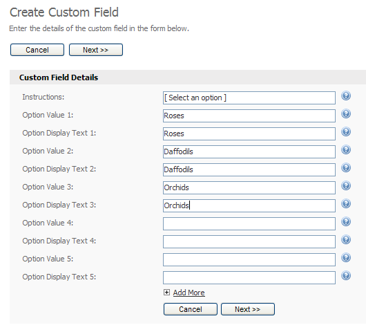
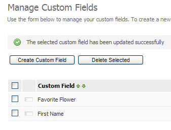

Collecting Additional Information (First Name, Age, etc) From Contacts
Collecting your visitors email address is fine, but what about when you want to personalize your email communications? That's where custom fields come in. Custom fields allow you to collect additional pieces of information from your contacts, such as name, age, sex and location. In this article we'll look at a simple example of using custom fields to improve email response rates.
Choosing What Information to Collect
As you know you can already collect your contacts email address using the system, but what other information would you like to collect? (Keep in mind that the more information you ask for, the less likely your contacts are to want to join your contact list).
In our example let's pretend we run a web site that sells flowers. We want to collect our contacts email address, first name and favorite flower. To do this we need to create a "custom field" in the system for each piece of information we want to collect, so let's do that now.
Creating the Custom Fields
Move your mouse over the "Contact Lists" tab at the top of the page and click the "View Custom Fields" menu option. You will be taken to the "Manage Custom Fields" page. Any custom fields you create will be shown here. Click the "Create a Custom Field" button to add a custom field. Creating a custom field is a multi-step process. To add the "first name" custom field complete the form as shown below then click "Next".

Creating our "first name" custom field in the system.
On the next step you can add optional details to the custom field such as a default value and a maximum length. We'll skip these so just click "Next". Finally, choose the contact list you want to apply the custom field to and click "Save". Your custom field will be created and you will be returned to the "View Custom Fields" page.

Our "first name" custom field has been saved in the system.
Let's now create a custom field called "Favorite Flower". This custom field will be a dropdown box that lets contacts choose their favorite flower type when entering their email address in our subscription form. As we did earlier, go to the "Create a Custom Field" screen. This time, enter "Favorite Flower" as the name of the custom field and choose "Dropdown List" for the field type. Make sure the "Yes, this field is required" box is ticket and click "Next".

Creating the "favorite flower" custom field.
We can now create the options for the custom field. We will let the contact choose from 3 different flowers: roses, daffodils and orchids. For the sake of our demo we will use the same text for the name and value of each option.

Creating the "favorite flower" custom field options.
Click "Next" when you are done. On the final step choose a contact list to add this custom field to and click "Save". We now have two custom fields that we can add to our subscription form to collect additional information from our contacts.

Our two custom fields as shown on the "View Custom Fields" page.
Creating the Subscription Form
You can now create a subscription form to collect the information from your contacts. To create the subscription form and add it to your web site please see this tutorial.